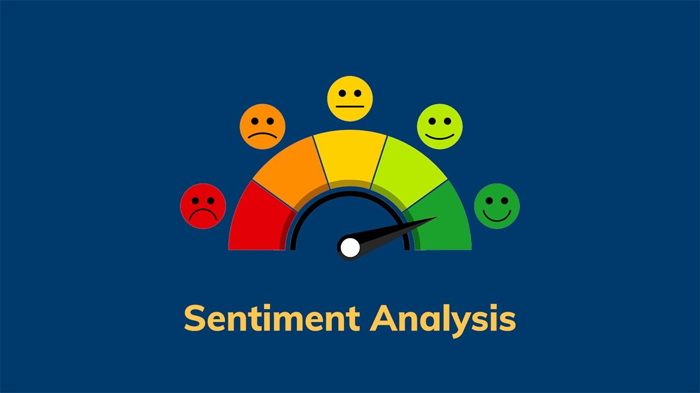

Telecom provider · Data Scientist · 2023–2025
Customer Comments: Topics & Sentiment
Every time a customer contacts the company they get a satisfaction survey that ends with a free-text question. The Customer Intelligence team wanted that feedback analyzed automatically, every month.
~42k
comments per month
5
business categories
3
sentiment classes
1.6M
customer table joined
01Approach
- CleanTokenize, lowercase, remove stopwords and punctuation, lemmatize (NLTK).
- VectorizeTF-IDF matrix, plus features flagging words close to business terms such as “price” or “invoice”.
- ClusterK-Means with 5 clusters agreed with Customer Intelligence.
- ScorePositive / neutral / negative with pysentiment.
- StoreResults saved to the database and joined with customer data.
02Categories & sentiment
Defined together with the Customer Intelligence team. Segments are equal on purpose: real shares are not shown.

03Impact
Complete, automated analysis of survey feedback, ready to cross with customer data to drive improvements in service and customer care.